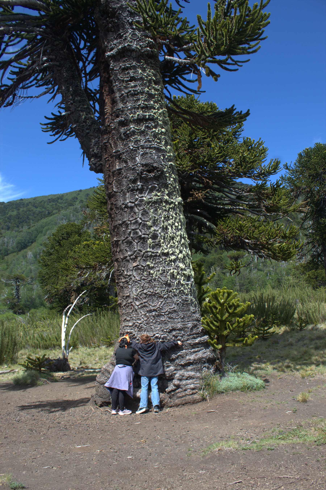

Trekking verano BajaAraucaria Milenaria + Laguna Pehuenco · Verano
Bosques milenarios y Laguna Pehuenco en una ruta de verano sin nieve, con vistas al Volcán Lonquimay.
🚐 Transporte🧗 Guía certif.🍎 Snack📷 Fotos
Desde $35.000 p/p
Reservar